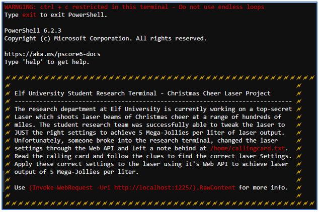

Xmas Cheer Laser¶
Challenge¶
The initial dialog with Sparkle Redberry:
Sparkle Redberry
I'm Sparkle Redberry and Imma chargin' my laser!
Problem is: the settings are off.
Do you know any PowerShell?
It'd be GREAT if you could hop in and recalibrate this thing.
It spreads holiday cheer across the Earth ...
... when it's working!
The hint from our badge:
PowerShell From: Sparkle Redberry SANS' PowerShell Cheat Sheet
The banner page from the terminal challenge:
Solution¶
Step 1: Angle¶
We start by looking at the contents of /home/callingcard.txt.
Get-Content /home/callingcard.txt
The following output is returned:
What's become of your dear laser?
Fa la la la la, la la la la
Seems you can't now seem to raise her!
Fa la la la la, la la la la
Could commands hold riddles in hist'ry?
Fa la la la la, la la la la
Nay! You'll ever suffer myst'ry!
Fa la la la la, la la la la
Using this hint we look at the PowerShell history with the following command:
history
The following output is returned:
Id CommandLine
-- -----------
1 Get-Help -Name Get-Process
2 Get-Help -Name Get-*
3 Set-ExecutionPolicy Unrestricted
4 Get-Service | ConvertTo-HTML -Property Name, Status > C:\services.htm
5 Get-Service | Export-CSV c:\service.csv
6 Get-Service | Select-Object Name, Status | Export-CSV c:\service.csv
7 (Invoke-WebRequest http://127.0.0.1:1225/api/angle?val=65.5).RawContent
8 Get-EventLog -Log "Application"
9 I have many name=value variables that I share to applications system wide. At a command I will reveal my secrets once you Get my Child Items.
We now have the first part of the solution with a hint to the next step.
Step 2: Refraction¶
Following on from the previous step, we use the following command to look at the environment variables:
Get-ChildItem ENV:
We follow this with the following command once we identify the riddle variable:
Get-ChildItem ENV:riddle | fl
The following output is returned:
Name : riddle
Value : Squeezed and compressed I am hidden away. Expand me from my prison and I will show you the way. Recurse through all /etc and Sort on my LastWriteTime to reveal im the newest of all.
We then use the following command to recusively search the /etc folder, sorting on the Last Write Time.
Get-ChildItem /etc -File -Recurse | select @{Name="LastWriteTime";Expression={$_.LastWriteTime}},FullName | sort LastWriteTime
The tail of this output is the following:
12/13/19 5:16:12 PM /etc/group
1/12/20 3:01:56 PM /etc/mtab
1/12/20 3:01:56 PM /etc/hosts
1/12/20 3:01:56 PM /etc/resolv.conf
1/12/20 3:01:56 PM /etc/hostname
1/12/20 3:01:56 PM /etc/apt/archive
Note
archive is some type of binary file. Guess it could be an archive.
We expanded the archive using the following command:
Expand-Archive /etc/apt/archive /home/elf/archive
We then navigated to the /home/elf/archive/refraction folder and used the Get-ChildItem command to display the contents:
Mode LastWriteTime Length Name
---- ------------- ------ ----
------ 11/7/19 11:57 AM 134 riddle
------ 11/5/19 2:26 PM 5724384 runme.elf
To execute the runme.elf file we need to use chmod +x ./runme.elf followed by ./runme.elf. The output was as follows:
refraction?val=1.867
This output is the second part of the solution. We also have a clue to the next step.
Step 3: Temperature¶
We used the following command to view the contents of riddle from the previous step:
Get-Content ./riddle
The contents of this file were:
Very shallow am I in the depths of your elf home. You can find my entity by using my md5 identity:
25520151A320B5B0D21561F92C8F6224
We then recursively looked for a file with the correct MD5 value using the following command:
Get-ChildItem /home/elf -file -recurse | Get-FileHash -Algorithm MD5 | Where-Object hash -eq 25520151A320B5B0D21561F92C8F6224
The output was as follows:
Algorithm Hash Path
--------- ---- ----
MD5 25520151A320B5B0D21561F92C8F6224 /home/elf/depths/produce/thhy5hll.txt
We then view the contents of this file using the following command:
Get-Content /home/elf/depths/produce/thhy5hll.txt
The output was as follows:
temperature?val=-33.5
I am one of many thousand similar txt's contained within the deepest of /home/elf/depths. Finding me will give you the most strength but doing so will require Piping all the FullName's to Sort Length.
This output is the third part of the solution. We also have a clue to the next step.
Step 4: Gas Mixture¶
Using the clue from the previous step, we used the following command to list directories, also displaying their path length:
Get-ChildItem /home/elf -Directory -Recurse | select @{Name="NameLength";Expression={$_.FullName.length}},FullName | sort NameLength | Select-Object -last 1 | Write-Host``
The output was as follows:
@{NameLength=375; FullName=/home/elf/depths/larger/cloud/behavior/beauty/enemy/produce/age/chair/unknown/escape/vote/long/writer/behind/ahead/thin/occasionally/explore/tape/wherever/practical/therefore/cool/plate/ice/play/truth/potatoes/beauty/fourth/careful/dawn/adult/either/burn/end/accurate/rubbed/cake/main/she/threw/eager/trip/to/soon/think/fall/is/greatest/become/accident/labor/sail/dropped/fox}
We then display the contents of this directory using:
Get-ChildItem /home/elf/depths/larger/cloud/behavior/beauty/enemy/produce/age/chair/unknown/escape/vote/long/writer/behind/ahead/thin/occasionally/explore/tape/wherever/practical/therefore/cool/plate/ice/play/truth/potatoes/beauty/fourth/careful/dawn/adult/either/burn/end/accurate/rubbed/cake/main/she/threw/eager/trip/to/soon/think/fall/is/greatest/become/accident/labor/sail/dropped/fox
The output was as follows:
Mode LastWriteTime Length Name
---- ------------- ------ ----
--r--- 11/18/19 7:53 PM 209 0jhj5xz6.txt
We viewed the contents of this file using:
Get-Content /home/elf/depths/larger/cloud/behavior/beauty/enemy/produce/age/chair/unknown/escape/vote/long/writer/behind/ahead/thin/occasionally/explore/tape/wherever/practical/therefore/cool/plate/ice/play/truth/potatoes/beauty/fourth/careful/dawn/adult/either/burn/end/accurate/rubbed/cake/main/she/threw/eager/trip/to/soon/think/fall/is/greatest/become/accident/labor/sail/dropped/fox/0jhj5xz6.txt
The output was as follows:
Get process information to include Username identification. Stop Process to show me you're skilled and in this order they must be killed:
bushy
alabaster
minty
holly
Do this for me and then you /shall/see .
Note
At this stage you can go to the /shall folder but it is empty!
We then identified the relevant process information using:
Get-Process -IncludeUserName
The output was as follows:
WS(M) CPU(s) Id UserName ProcessName
----- ------ -- -------- -----------
26.25 2.82 6 root CheerLaserServi
125.45 12.86 31 elf elf
3.18 0.03 1 root init
0.72 0.00 23 bushy sleep
0.71 0.00 25 alabaster sleep
0.78 0.00 28 minty sleep
0.78 0.00 29 holly sleep
3.30 0.00 30 root su
Caution
The Process Ids shown above are not always the same
We then stopped the relevant processes using being careful to maintain the order given in the clue:
Stop-Process 23
Stop-Process 25
Stop-Process 28
Stop-Process 29
We then displayed the contents of the /shall folder using:
Get-ChildItem /shall/
The output was as follows:
Mode LastWriteTime Length Name
---- ------------- ------ ----
--r--- 1/12/20 4:46 PM 149 see
We then viewed the contents of the see file uisng:
Get-Content /shall/see
The output was as follows:
Get the .xml children of /etc - an event log to be found. Group all .Id's and the last thing will be in the Properties of the lonely unique event Id.
Using this clue we use the following command:
Get-ChildItem /etc/*.xml -recurse
The output was as follows:
Directory: /etc/systemd/system/timers.target.wants
Mode LastWriteTime Length Name
---- ------------- ------ ----
--r--- 11/18/19 7:53 PM 10006962 EventLog.xml
We then used the following commands to group the events in EventLog.xml according to their count:
$xmlevents = Import-Clixml -Path /etc/systemd/system/timers.target.wants/EventLog.xml
$xmlevents | Group-Object -Property Id | Select-Object -Property Count, Name
We obtained the following output:
Count Name
----- ----
1 1
39 2
179 3
2 4
905 5
98 6
Hence we are looking for the log entry with Id = 1. We find the correct log entry using:
$xmlevents | Where-Object -Property Id -eq 1 | fl Message
The output was as follows:
Message : Process Create:
RuleName:
UtcTime: 2019-11-07 17:59:56.525
ProcessGuid: {BA5C6BBB-5B9C-5DC4-0000-00107660A900}
ProcessId: 3664
Image: C:\Windows\System32\WindowsPowerShell\v1.0\powershell.exe
FileVersion: 10.0.14393.206 (rs1_release.160915-0644)
Description: Windows PowerShell
Product: Microsoft® Windows® Operating System
Company: Microsoft Corporation
OriginalFileName: PowerShell.EXE
CommandLine: C:\Windows\System32\WindowsPowerShell\v1.0\powershell.exe -c "`$correct_gases_postbody = @{`n O=6`n H=7`n He=3`n N=4`n Ne=22`n
Ar=11`n Xe=10`n F=20`n Kr=8`n Rn=9`n}`n"
CurrentDirectory: C:\
User: ELFURESEARCH\allservices
LogonGuid: {BA5C6BBB-5B9C-5DC4-0000-0020F55CA900}
LogonId: 0xA95CF5
TerminalSessionId: 0
IntegrityLevel: High
Hashes: MD5=097CE5761C89434367598B34FE32893B
ParentProcessGuid: {BA5C6BBB-4C79-5DC4-0000-001029350100}
ParentProcessId: 1008
ParentImage: C:\Windows\System32\svchost.exe
ParentCommandLine: C:\Windows\system32\svchost.exe -k netsvcs
We finally have all the information we need to solve the terminal challenge!
Step 5: Constructing the API commands¶
As per the banner, we typed in the following command to display API instructions:
(Invoke-WebRequest -Uri http://localhost:1225/).RawContent
We followed these instruction to create the following commands:
(Invoke-WebRequest -Uri http://localhost:1225/api/off -Method GET).RawContent
(Invoke-WebRequest -Uri http://localhost:1225/api/temperature?val=-33.5 -Method GET).RawContent
(Invoke-WebRequest http://127.0.0.1:1225/api/angle?val=65.5 -Method GET).RawContent
(Invoke-WebRequest http://127.0.0.1:1225/api/refraction?val=1.867 -Method GET).RawContent
$postParams = @{O=6;H=7;He=3;N=4;Ne=22;Ar=11;Xe=10;F=20;Kr=8;Rn=9}
(Invoke-WebRequest -Uri http://localhost:1225/api/gas -Method POST -Body $postParams).RawContent
(Invoke-WebRequest -Uri http://localhost:1225/api/on -Method GET).RawContent
(Invoke-WebRequest -Uri http://localhost:1225/api/output -Method GET).RawContent
We obtained the following output:
Success! - 6.83 Mega-Jollies of Laser Output Reached!
Hints¶
Sparkle Redberry provides the following hint in his dialog after solving the terminal challenge:
Sparkle Redberry You got it - three cheers for cheer! For objective 5, have you taken a look at our Zeek logs? Something's gone wrong. But I hear someone named Rita can help us. Can you and she figure out what happened?
The following hint was unlocked in our badge:
RITA From: Sparkle Redberry RITA's homepage